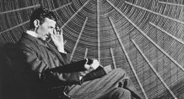
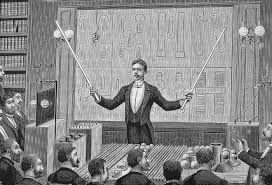

"If your hate could be turned into electricity, it would light up the whole world."
He was influenced by Nikoli Tesla. One way you can see Tesla's influence is through Musk's car company Tesla.
See ProfileHe was a Austrain physicist and philosopher that studied things like shock waves and found the rario of one's speed to that of the sound around. Nikola Tesla was influenced by the studies and experiments he conducted.
See ProfileHe was a French philosopher and writer who advocated for freedom of speech religion and he crtized the idea of Christianity. Tesla read many of his works.
See Profile
One of Nikola Tesla most known inoventions is the Tesla Coil which is a energy storage like a battery. This invention has helped scientist today understand how to use electricity and without Tesla we would be harvesting wireless electricity differnently.
Biography Inventions Conterversey